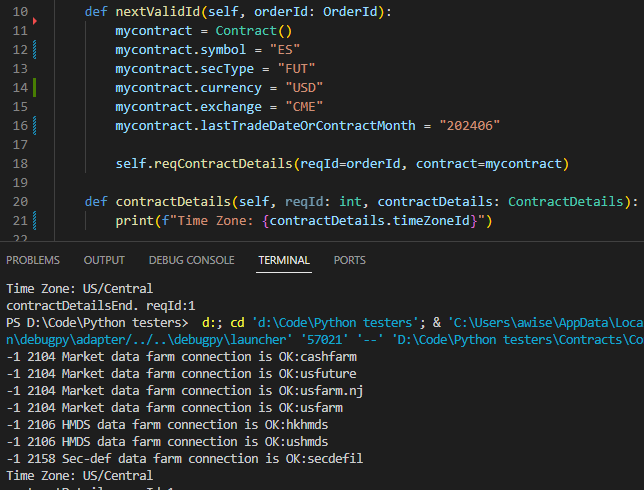

The exchange Time Zone is the value the exchange itself uses to calculate time. This value is typically unique to the Operator Time Zone, but these values can overlap.
As an example, the New York Stock Exchange operates on “US/Eastern”. However, the CME operates on “US/Central”. This values can be programmatically requested using the EClient.reqContractDetails method, and then received from EWrapper.contractDetails in contractDetails.Time ZoneId.
Note that this will be interpreted differently from “America/Chicago”.
